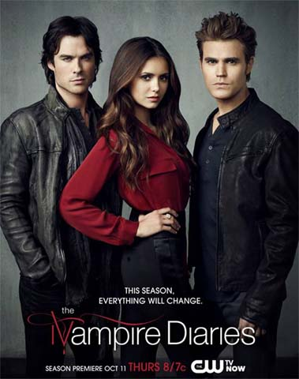
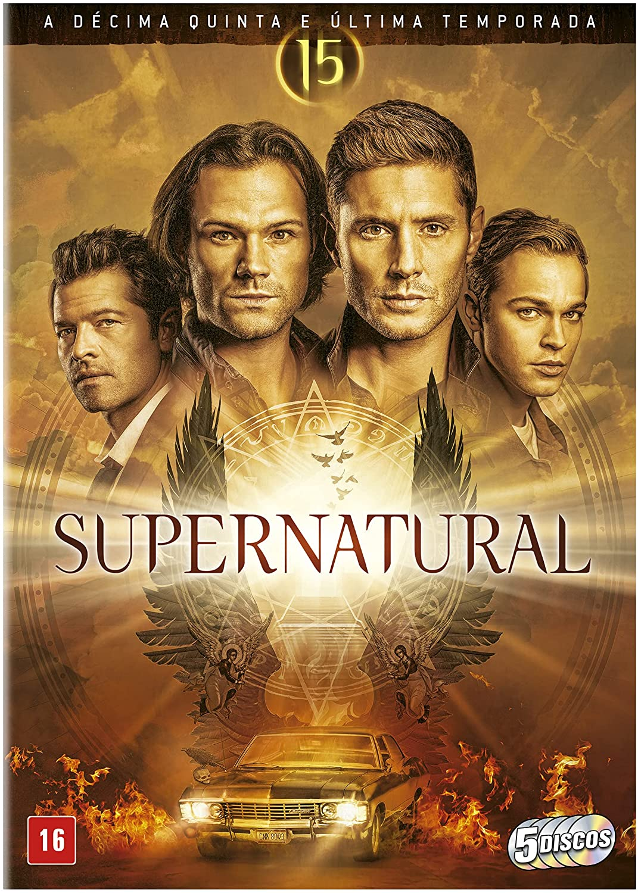
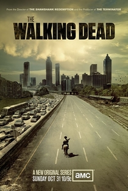
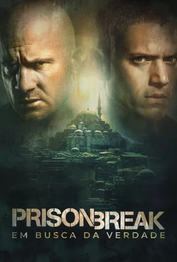

As 5 melhores séries de todos os tempos!
Começando com o nosso TOP 5 vem a THE VAMPIRE DIARIES!
A cidade fictícia de Mystic Falls, na Virgina, é assombrada por criaturas sobrenaturais. Damon e Stefan Salvatore são irmãos que ganharam a condição de vampiro e desde então procuram manter sua imortalidade em segredo. Ao mesmo tempo, buscam resistir à vontade de atacar seres humanos.
Trailer Season 1
No TOP 4 está a série Supernatural!
Os irmãos Sam e Dean Winchester encaram cenários sinistros caçando monstros. Velhos truques, armas e esconderijos não funcionam mais e seus amigos os traem, forçando os irmãos a contar um com o outro enquanto enfrentam novos inimigos.
Trailer Season 1
No TOP 3 não podia faltar Breaking Bad

O professor de química Walter White não acredita que sua vida possa piorar ainda mais. Quando descobre que tem câncer terminal, Walter decide arriscar tudo para ganhar dinheiro enquanto pode, transformando sua van em um laboratório de metanfetamina.
Trailer Season 1
No TOP 2 está sem dúvidas The Walking Dead 
Baseado na história em quadrinhos escrita por Robert Kirkman, este drama potente e visceral retrata a vida nos Estados Unidos pós-apocalíptico. Um grupo de sobreviventes, liderado pelo policial Rick Grimes, segue viajando em busca de uma nova moradia segura e distante dos mortos-vivos. A pressão para permanecerem vivos e lutarem pela sobrevivência faz com que muitos do grupo sejam submetidos às mais profundas formas de crueldade humana. Rick acaba descobrindo que o tão assustador desespero pela subsistência pode ser ainda mais fatal do que os próprios mortos-vivos que os rodeiam.
Trailer Season 1
No TOP 1 Simplismente a mais magnífica de todas! Prison Break!
A história gira em torno de Lincoln Burrows, um homem que foi sentenciado à morte por supostamente ter assassinado o irmão da vice-presidente dos EUA, e seu irmão, Michael Scofield, um engenheiro civil, que cria um plano para resgatá-lo da prisão antes que seja executado.
Trailer Season 1